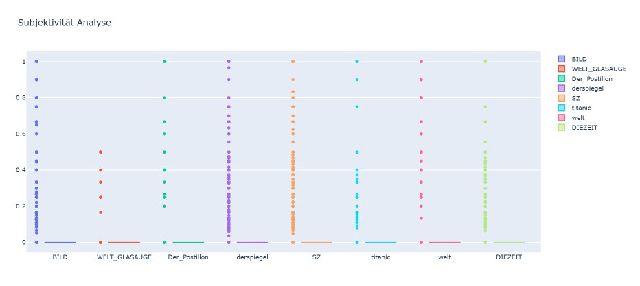

Multiclass Classification wurde in unserem Projekt verwendet, um die Tweets von 8
Twitter-Accounts unterschiedlicher Zeitungen zuordnen zu können. Hierbei wurden auch die
unterschiedlichen Nuancen der Schreibstile der jeweiligen Accounts maschinell untersucht.
Bei der Vorverarbeitung oder auch dem Preprocessing der Daten wurde die größtmögliche gemeinsame Schnittmenge, also 160 Tweets, welche gleichzeitig die Gesamtmenge an Tweets des Datensatzes von “Glasauge” ist, gewählt. Es wurde so vorgegangen, um einen ausbalancierten Datensatz zu gewährleisten. So wurden von jeder im Vorfeld gescrapten JSON-Datei der 8 Größten Zeitschriften die 160 ersten Objekte entnommen und zusammen in eine CSV-Datei geschrieben.
Es gibt unterschiedliche Machine Learning Algorithmen, um diese Klassifizierung
durchzuführen, dazu gehören unter anderem:
- Linear Support Vector Machine (SVM)
- Multinomial Naive Bayes
- Logistic Regression
- Random Forest
Um herauszufinden, welches Algorithmus am besten dafür geeignet ist, wurde ein Test mit vorverarbeiteten Daten durchgeführt. Die Ergebnisse einer 10-fachen Kruzvalidierung, haben gezeigt, dass logistische Regression die besten Ergebnisse erzeugt.

Nach der Auswahl des Algorithmus wird dieser nochmals auf die vorverarbeiteten Daten
angewendet. Die Datensätze wurden im Verhältnis 80 % zu 20 % in Training- und
Testdatensätze aufgeteilt und erneut der logistischen Regression unterzogen.
Die Evaluationstabelle zeigt, welche Ergebnisse der Lernalgorithmus, gemessen in
Precision, Recall und Accuracy in Bezug auf die einzelnen Klassen erreicht hat:

Wer hat den Tweet geschrieben?
Das Model im Einsatz Model Deployment
Besuchen Sie unsere Vorhersagen-Applikation
Sehen Sie das trainierte Model im Einsatz.
https://hauptseminardh.herokuapp.com/

Diese Analyse zeigt auf, dass die Mehrheit der Posts als neutral bzw. objektiv bewertet wurde. Dies ist vor allem deshalb ein interessantes Ergebnis, da man in einer weiteren Untersuchung herausstellen kann, warum die Posts so bewertet werden wie sie bewertet werden und ob das vorliegende Modell in der Lage ist, Ironie, Sarkasmus und allgemein übertriebene Formulierungen zu erkennen. Dies scheint mir hier nicht der Fall zu sein.
Anhand des Ergebnisses in Fig. 5 kann man sehen, dass die Satire-Zeitungen weitaus weniger Posten als die Tageszeitungen. Die könnte bspw. implizieren, dass die Satirezeitungen kleinere Redaktionen haben und dadurch weniger Inhalte produzieren können oder aber länger brauchen, um ein lustige Satiremeldung zu schreiben, bzw. warten bis sich ein Fall ergibt, der einer Parodie würdig ist.
Wie man an Fig. 1 sieht, enthalten die Top 3 häufig den Namen der postenden Zeitung. Filtert man Links nicht heraus, ist https ebenfalls einer der höchst-frequentierten Wörter. Auch Fig. 2 zeigt nur wenige inhaltsbezogene Wörter an wie etwa Merkel oder Laschet, dafür ist auch hier wieder das Wort Abo vertreten. Dies impliziert, dass die Tweets sehr häufig auf das eigene Angebot der Zeitung und externe Seiten zu verlinken. Dies wird auch noch mal durch das outlinks-Feld innerhalb der Metadaten gestützt, welches aufzeigt wie viele Verlinkungen es nach Außen gibt
Diese Analyse zeigt auf, dass die Mehrheit der Posts als neutral bzw. objektiv bewertet wurde . Dies ist vor allem deshalb ein interessantes Ergebnis, da man in einer weiteren Untersuchung herausstellen kann, warum die Posts so bewertet werden wie sie bewertet werden und ob das vorliegende Modell in der Lage ist, Ironie, Sarkasmus und allgemein übertriebene Formulierungen zu erkennen. Dies scheint mir hier nicht der Fall zu sein.